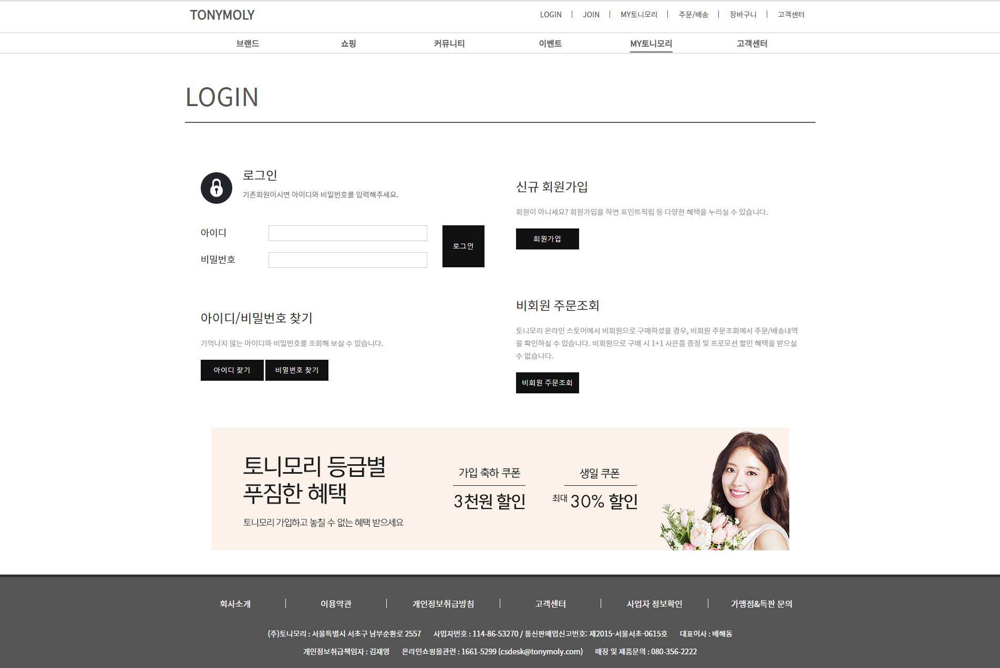

TONYMOLY 포토폴리오
TONYMOLY
2018.12.06
토니모리의 페이지가 보이는 구도가 여백이 너무 많고 메뉴가 복잡하여 이용자가 웹 사이트를 사용함에서 불편함을 느낄 것으로 예상하여 사용자가 좀 더 쉽고 편하게 사이트를 이용할 수 있도록 사이트의 콘텐츠 배치를 다르게 하여 사용자가 쉽게 접근할 수 있도록 리뉴얼 하면 좋을 것으로 생각하여 작업하게 되었습니다.
메인 페이지
기존 토니모리의 메인 페이지는 쓸모없는 여백과 복잡한 메뉴 구성을 하고 있어 사용의 불편함을 느꼈습니다. 저는 이러한 여백을 안정감 있게 바꾸고 기존의 콘텐츠 배치를 좀 더 보기 쉽게 배치하고 복잡했던 메뉴 구성을 하나로 정리하여 구성하고 사용자가 사용할 때 편하게 사용할 수 있도록 재배치하였습니다.
주요 서브 페이지
브랜드
주요 서브 페이지
커뮤니티
주요 서브 페이지
이벤트
주요 서브 페이지
MY TONYMOLY
주요 서브 페이지
고객센터
주요 서브 페이지
Media
Tablet / Moblie을 지원하도록 반응형 사이트를 구현 하였습니다.
- 

에필로그
이번 토니모리 작업은 리뉴얼을 통한 제작이었습니다. 기존의 사이트를 똑같이 만드는 일은 손가락이 아플 뿐 어렵지는 않은 일이었습니다. 하지만 이번 토니모리 페이지 리뉴얼 작업은 기존의 페이지의 단점을 없애고 사용자가 더욱더 편하게 사용할 수 있도록 제작해야만 하기에 너무나도 어려웠습니다. 하지만 이번 토니모리 작업을 통해 리뉴얼 뿐만 아닌 내가 직접 디자인을 해 하나의 사이트를 제작할 수 있는 실력과 자신감을 주는 작업이라 재미있고 즐거웠습니다.